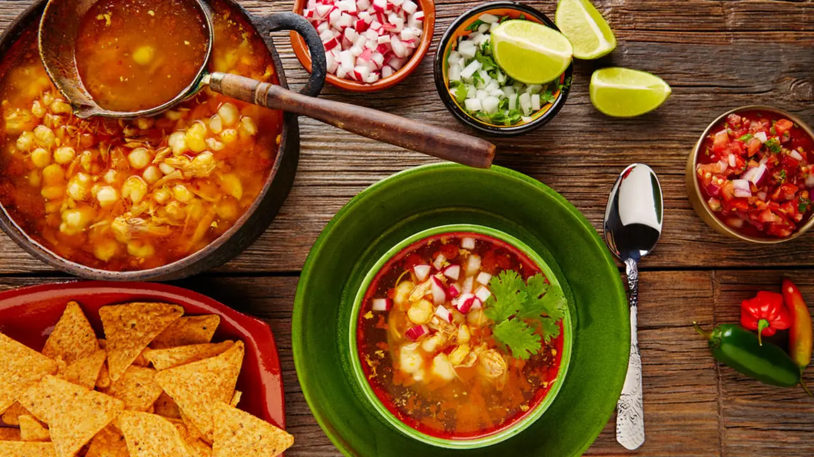
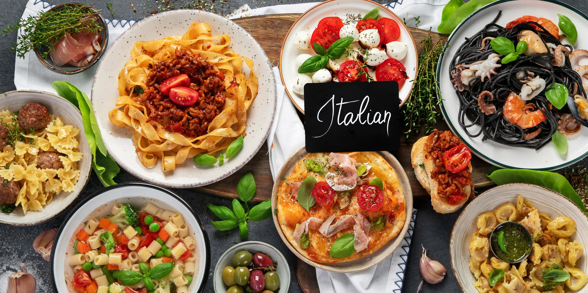

Світ наповнений різноманітними дивовижними ароматами. Любиш куштувати щось новеньке? Бондюель пропонує тобі цілий світ нових смаків! Історія та сучасність, рецепти та цікаві фото! Дізнайся щось нове про знайомі тобі кухні, а також познайомся з новими. Вирушай у подорож смаків разом з нами.
Переконайтеся, що кухня зовсім не має бути нудною та монотонною. Запрошуємо на чудову подорож навколо світу смачним кулінарним маршрутом. Підкажемо, як пізнати ще більше страв, котрі порадують ваш смак. З нами довідаєтеся також, які звичаї панують за кухонними столами. Котрий гарнір буде найсмачнішим? Чи спокуситеся на сонячну кухню Італії, вогняну Мексику, вишукану Францію, чи, може, незрівнянний аромат Сходу? Довідайтеся про це вже зараз. Почнемо нашу подорож з грецької кухні, де відчувається істотний італійський і турецький вплив. В основі цієї кухні оливкова олія, овочі та трави, характерні для середземноморського регіону. Секрет грецької кухні – це радість спільної бесіди. Греки люблять попоїсти, а тому цінують смачну їжу. Не повинен дивувати той факт, що вони можуть вибратися в довгу подорож до ресторану, де подають найкращі печені на рожні «сувлакі» – основну грецьку страву.
Далі перенесемося до Іспанії, котра ставиться до їжі простіше. Захоплює смак різноманітністю страв із м’яса та риби, а також овочів. Своїм неповторним смаком завдячує людям, котрі раніше заселяли Іберійський півострів. Іспанська кухня здобула світову славу завдяки таким стравам як паелья і гаспачо. Наступна зупинка – це природна та гармонійна, а також визнана найздоровішою у світі, японська кухня. Ресторани суші виростають в містах по цілому світі, ніби гриби після дощу. Білий рис і соя – це інгредієнти, котрих слід очікувати майже в кожній страві. Японська кухня дивує, і не кожному підходить її простота та строгість форми й вмісту. Їжа в Японії – це не лише заспокоєння потреб людини, але також естетичне та містичне пізнання. Важливими є емоції, які викликає вигляд гарно поданої страви, настрій, а також стан душі та серця.
Останнім часом гастрономічними «хітами» стали страви мексиканської кухні. Тож, перенесемося до Мексики, де іспанські конкістадори позначили свою присутність у багатьох сферах, серед яких і кулінарна. Зустріч двох культур призвела до виникнення чудової ароматної та вогняної кухні. До прибуття іспанців основою харчування була кукурудза. З кукурудзяної маси випікається мексиканський хліб – тортилья. Для здобуття рівноваги прийшов час для тайської кухні, хорошим приводом для відвідин якої є ідеально збалансоване поєднання гострого, кислого, гіркого та солодкого смаків. Характерним є застосування свіжих трав і ароматів, таких як сік лайму, лимонної трави та свіжого коріандру. Так само, як і в азіатських кухнях, рис є основним інгредієнтом страв. Окрім смаку страви, в тайській кухні дуже важливим є її вигляд. Тому таїландці багато уваги приділяють декоруванню, котре у випадку вирізання овочів і фруктів стало майже мистецтвом.
Представником найвищого рівня досконалості та різноманітності страв є індійська кухня. Пропонує вона, з упевненістю, одні з найкращих вегетаріанських страв у світі. Прийом їжі складається із легкої страви, котрою найчастіше виступає салат, основної страви, а також надзвичайної випічки – чапаті, котра вживається з овочами та рисом. Індуси вірять, що продукти є даром богів для людей. Саме тому приготування страв вимагає поваги, спокою та зосередження. Прийшов час пізнати кухню, котра багатьма гурманами вважається найсмачнішою кухнею світу – італійську. Відомі страви італійської кухні, котрі походять з IV століття до н.е. Інтенсивний аромат їм надають часник, шафран, орегано, вино та оливкова олія першого віджиму. Страви не є складними, проте захоплюють багатим смаком і різноманітністю. А цей запах свіжих трав і дозрілих на сонці помідорів, солодкого перцю та цибулі! Також на сонці сушаться, ймовірно, найкращі на світі пікантні м’ясні вироби. Спагеті чи піца – це символи, що не передають усього розмаїття та багатства, якими характеризуються особливі страви дев’ятнадцяти регіонів Італії.
Ще одна зупинка – вишукана французька кухня, яку багато хто вважає найкращою в світі. Кухня для звичайного француза – невід’ємний елемент щоденного життя, тому не слід дивуватися, що саме французи запровадили мистецтво «savoir – vivre» (уміння жити). У світі кухня відома завдяки самим французам, котрі вміють рекламувати свою країну та її принади. Навіть найбільші кулінарні невігласи можуть назвати найпопулярніші французькі страви, такі як суп-пюре із цибулі чи відомий багет, або ж більш делікатесні жаб'ячі лапки, а ще слимаків, яких подають у різному вигляді. Описані вище кухні світу – це лише початок кулінарного маршруту. Смачних зупинок набагато більше. Ось ваш довідник по захоплюючих смаках кухонь світу. Варто також інколи зробити перерву у своїх мандрах і спробувати вибрані рецепти страв певної кухні. СМАЧНОГО!